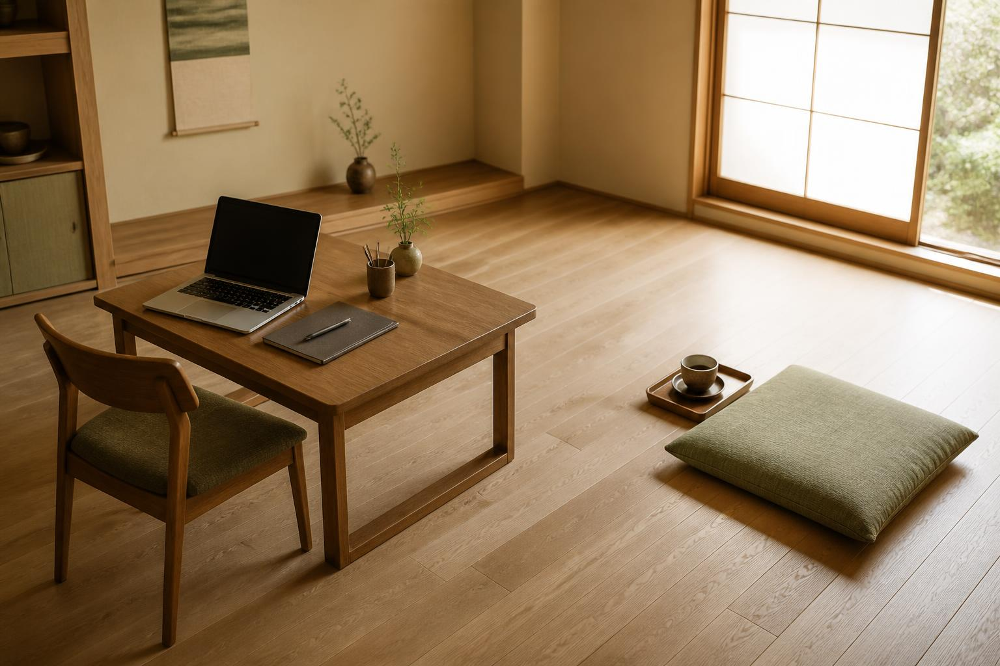
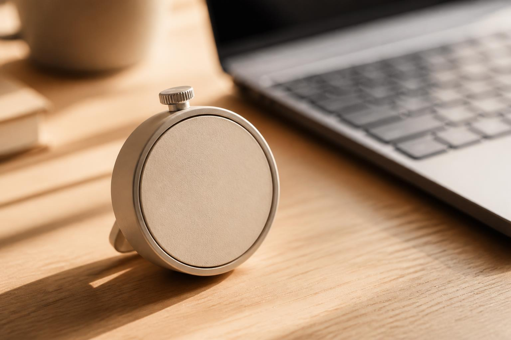
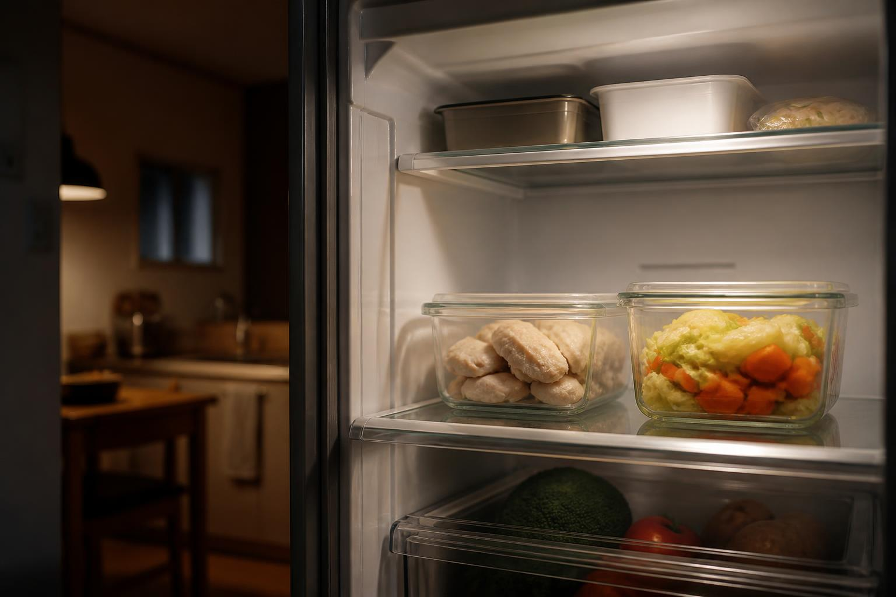
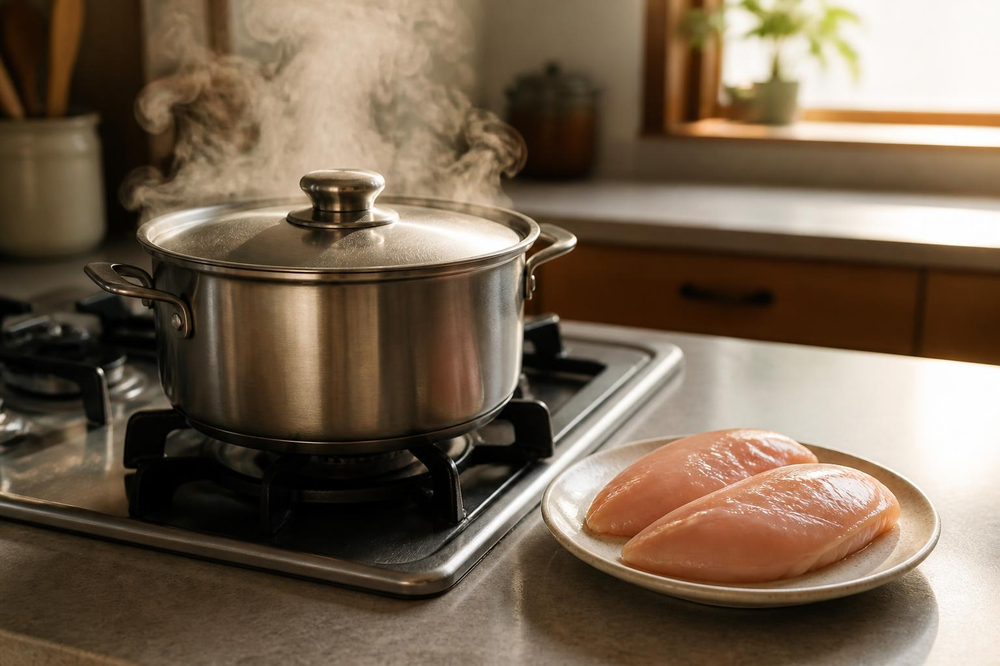
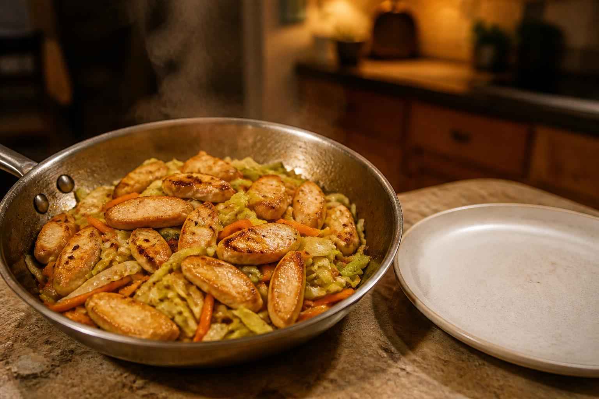
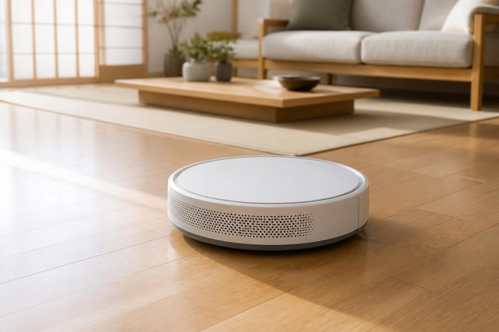
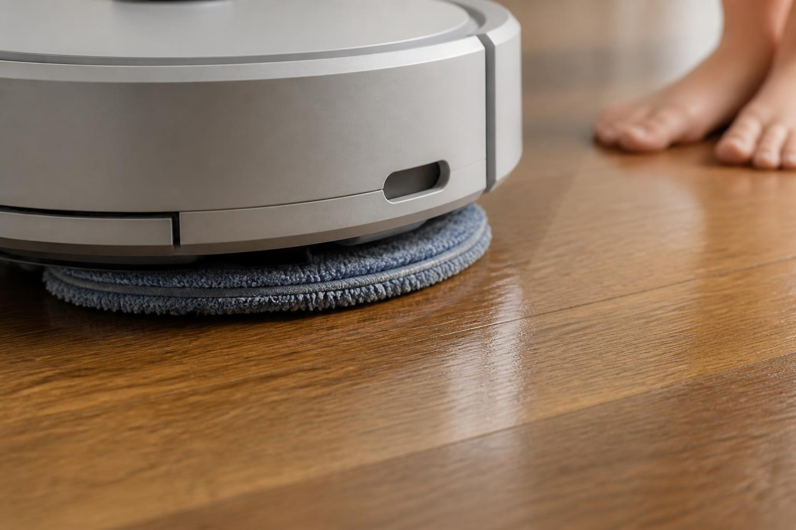
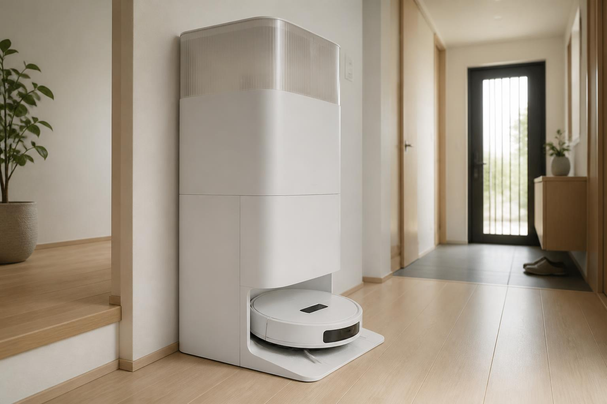

BLOG & WEB ARTICLE — ライティングサンプル
ブログ・Web記事の
自主制作サンプル 3本
すべて自主制作のサンプルです。クライアント案件ではありません。体験談は文体・構成をご覧いただくための架空の設定で、実在の人物・出来事ではありません。掲載画像はすべてデモ用の生成画像で、実在の製品・店舗ではありません（実案件では、支給素材・フリー素材・生成画像のどれを使うかを事前にご相談します）。
① SEO記事｜在宅ワークで集中できない
想定キーワード: 在宅ワーク 集中できない ／ 在宅 集中力 続かない
想定読者: 在宅勤務歴3ヶ月〜1年。家だと仕事が進まず自己嫌悪になっている人
想定媒体: 働き方・ライフスタイル系オウンドメディア／文字数: 約3,000字（本文実測3,017字）
アイキャッチ。記事の入口で「自宅で働く朝」の場面を先に見せ、本文の自責トーンを和らげています（デモ用生成画像）
納品時は、この構成案を先にお出しします。本文の前に見出し設計と各見出しの狙いを共有し、方向性の合意を取ってから執筆に入ります。
在宅ワークを始めた頃、私は自分のことを相当なまけ者だと思っていました。
朝9時にパソコンの前に座る。10分後には洗い物をしている。戻ってきてメールを開いたはずが、気づけばスマホでニュースを読んでいる。夕方になって「今日、何をしたんだろう」と天井を見る。この繰り返しでした。
同じ状態で検索してこのページを開いた人も多いんじゃないでしょうか。先にひとつだけ。集中が続かないのは、あなたの意志の強さとほとんど関係がありません。
集中できないのは根性の問題ではない
オフィスにいたときのことを思い出してみてください。
朝、電車に乗る。席に着く。まわりの人がキーボードを叩いている。昼になれば同僚が「ごはん行きます?」と声をかけてくる。18時を過ぎると、そろそろ帰るかという空気が流れる。
あの環境では、集中するための仕掛けを会社が全部用意してくれていました。移動、席、視線、時間の区切り。自分で努力していたつもりの部分は、実はかなりの割合が外側から与えられたものだったわけです。
在宅になると、それが一気に消えます。残ったのは、自宅という「休む場所」と、自分の意志だけ。この落差を根性で埋めようとするから苦しくなる。
だから直すべきは自分ではなく、消えてしまった仕掛けのほうだと考えてみてください。
家で集中が切れる3つの理由
1. 仕事とプライベートの境界が消えている
同じ机で確定申告もやるし、ネット通販も見るし、家族とも話す。脳はその場所を「仕事の場」と認識できません。
これは意識の問題ではなく、単純に手がかりが足りていない状態です。人は場所や姿勢とセットで行動を覚えるので、同じ椅子で全部やっていると切り替えのスイッチが入らなくなります。
2. 中断されるのが当たり前になっている
宅配便が来る。洗濯機が鳴る。家族に話しかけられる。Slackの通知が光る。
一度切れた集中を戻すには、けっこうな時間がかかります。体感としては「あれ、どこまでやってたっけ」と資料を読み直す数分。それが1日に10回起きれば、それだけで小一時間が消えていく計算になりますよね。
つらいのは、中断そのものより「またやり直しか」という気持ちのほうだったりします。
3. 終わりの時刻が決まっていない
出社していれば、終電なり定時なりが強制的に区切りをつけてくれました。家にはそれがない。
すると「夜にやればいいか」という逃げ道が生まれます。逃げ道があるうちは、昼間に本気を出す理由がなくなる。夜になっても結局やらず、罪悪感だけ残って翌朝を迎える。この流れに心当たりがある人は多いはずです。
今日から変えられる4つのこと
道具を買い足す前に、順番に試してほしいものを並べます。上から順にコストが低いです。
席をもう1つ作る

本文の対策①に対応。「部屋を分ける」ではなく「席を分ける」だと伝わるよう、1部屋の中に2箇所を写した構図にしています（デモ用生成画像）
書斎を用意しろという話ではありません。ダイニングテーブルの、いつもと違う側の椅子で十分です。
「ここに座ったら仕事」と決める。仕事が終わったら、その席から離れる。たったこれだけでも、脳は場所と行動を結びつけ始めます。ワンルームなら、床に座布団を1枚置いて「休憩はこっち」と決めるやり方でも効きます。
通知は「切る」ではなく「時間帯を決める」
全部オフにすると、今度は「見逃してないか」が気になって集中できません。
おすすめは、返信する時間をあらかじめ決めてしまうこと。たとえば11時、15時、17時の3回。チームには「基本この時間に返します。急ぎは電話ください」と一度伝えておけば、たいていの職場では通ります。
自分で決めた時間に見るのと、鳴るたびに見るのとでは、消耗の量がまるで違ってきます。
25分だけやる

対策③に対応。数字を写し込まないタイマーにして、記事の主張（時間の長さではなく「始める」こと）から視線が逸れないようにしています（デモ用生成画像）
やる気が出るのを待たない。25分だけタイマーをかけて、そのあいだは1つのことだけやる。終わったら5分立ち上がる。
短すぎると感じるかもしれませんが、狙いは作業量ではありません。「始められた」という事実を1日の早い時間に作ることです。
人は取りかかってから調子が出るので、最初のハードルさえ越えれば、25分のつもりが40分続いていたりします。逆に、乗らない日は25分でやめていい。それでもゼロではないわけですから。
終業の合図をつくる
パソコンを閉じる。カップを洗う。ベランダに出て外の空気を吸う。何でもかまいません。毎日同じ動作を、仕事の終わりに置く。
これがないと、仕事は夜まで薄く伸びていきます。伸びた分だけ休めなくなって、翌日の集中力を前借りすることになる。終わらせる技術は、始める技術と同じくらい大事だと感じます。
それでも進まない日にどうするか
ここまで書いておいてなんですが、全部やっても進まない日はあります。
寝不足の日、気がかりなことがある日、単純に体調が悪い日。そういう日に「昨日はできたのに」と自分を責めると、翌日まで引きずってさらに動けなくなる。
そんな日は、いちばん軽い作業をひとつだけ片づけて終わりにしてしまうのが結果的に早いです。メールの返信1本、資料のファイル名を整えるだけでもいい。
大事なのは、明日の自分が座りやすい状態で椅子を空けておくこと。散らかった机と未読の山を残すと、翌朝そこに座るのが憂うつになります。
よくある3つの勘違い
対策を調べていると、かえって遠回りになる情報にも当たります。よく見かけるものを3つだけ。
「集中できる環境を整えてから始める」 — デスクを買い替え、モニターを増やし、椅子を選ぶ。準備そのものが目的化して、肝心の仕事に着手しない状態が生まれます。環境づくりは、動き出したあとに少しずつでかまいません。
「まとまった時間が取れないと意味がない」 — 3時間空くのを待っていると、その3時間は永遠に来ません。15分で終わる仕事から手をつけたほうが、結果として日が暮れる頃の進み方は良くなります。
「音楽さえあれば集中できる」 — 単純作業なら効きます。ただ、文章を書く、資料の内容を考えるといった言葉を扱う仕事では、歌詞のある曲は邪魔になりやすい。同じ音楽でも、作業の種類で向き不向きが変わってきます。
よくある質問
Q. 家族がいて、どうしても話しかけられます
完全に遮断するより、話しかけていい時間を決めるほうが現実的です。「この1時間は返事できない、そのあとは大丈夫」と先に伝えておく。相手も、いつなら話せるか分かっていれば待てます。
Q. カフェで作業したほうがいいですか
集中できるなら、それが早いです。ただ毎日となると費用が重い。週に1〜2回、どうしても進めたい仕事の日だけ外に出る、という使い分けをしている人が多い印象です。
Q. 昼食のあとに必ず眠くなります
食後の眠気は自然な反応なので、根性で抑えようとしないほうがいいです。その時間帯には頭を使わない作業を置く。あるいは15分だけ横になる。眠い時間に難しい仕事をぶつけないだけで、1日の総量は変わってきます。
集中は気合ではなく段取りでつくる
在宅で集中できないのは、性格でも才能でもなく、会社が肩代わりしてくれていた仕組みが手元にないからでした。
なので、必要なのはやる気を絞り出すことではなく、その仕組みを自分の家に小さく作り直していく作業になります。
今日ひとつだけやるなら、席をもう1つ決めるところからにしてみてください。椅子を1脚ずらすだけなら、今すぐできますよね?
↑ 目次へ戻る
② 体験談記事｜自炊が続かなかった私が、週1の作り置きだけ続いた話
想定媒体: 暮らし系メディア、食材宅配・調理家電のオウンドメディア
想定用途: 一人称の体験談記事、共感型コラム／文字数: 約1,600字（本文実測1,631字）
登場する体験は架空の設定です。文体と構成をご覧いただくためのサンプルで、実在の人物・出来事ではありません。実案件では、ご本人の取材内容またはいただいた素材にもとづいて執筆します。

アイキャッチ。記事の結論（今の冷蔵庫はタッパー2つだけ）を先に画で見せて、本文の落差を作っています（デモ用生成画像）
冷蔵庫を開けたら、しなびたキャベツが4分の1だけ残っていました。
買ったのは先週の火曜日。使うつもりで買って、結局そのまま。三日連続でコンビニのパスタを食べた週の金曜日、それを見てさすがに落ち込みました。
自炊を続けられない人間なんだと、そのときは本気で思っていたんです。
やる気がある日ほど失敗していた
思い返すと、自炊に挑戦したことは何度もありました。
日曜の夜、レシピサイトを開いて「今週はこれとこれを作ろう」と決める。材料をメモして、スーパーで4,000円ぶん買い込む。この時点までは調子がいい。
崩れるのは水曜あたり。残業して帰宅したのが21時半。玉ねぎを刻む気力なんて残っていません。そのまま冷蔵庫の食材だけが取り残されて、週末に捨てる。捨てるときの気分の悪さといったらなかった。
これを三回くらい繰り返して、「自炊は向いていない」と結論を出しました。今にして思えば、向き不向きではなく段取りの問題だったんですけど。
きっかけは友人の「一種類だけ」という言葉
転機は、久しぶりに会った友人との会話でした。
自炊の話になって、私が「毎日作るなんて無理」とこぼしたら、彼女がきょとんとした顔で言ったんです。
「毎日作ってないよ。日曜に一種類だけ作って、あとは焼くだけ」
一種類。しかも一品ではなく一種類。詳しく聞くと、日曜日に鶏むね肉をひたすら茹でて、タッパーに入れておくだけだと言う。味付けもしない。食べるときにポン酢をかけたり、マヨネーズと和えたり、そのつど変えるらしい。
献立を組む発想がそもそもなかったわけです。拍子抜けしました。
最初の日曜日にやったこと

体験談は「作業の全体像」より「その日の台所の空気」を写したほうが、読み手が自分の家に置き換えやすくなります（デモ用生成画像）
翌週の日曜、鶏むね肉を2枚買ってきました。600円くらい。
鍋にお湯を沸かして、火を止めてから肉を入れて、蓋をして30分放置する。それだけ。他の作業をしているあいだに勝手にできあがっているので、キッチンに立っていた時間は5分もありません。
そのあと、勢いでにんじんとキャベツを切ってタッパーに入れました。生のまま。切っておくだけで、あとで炒めるにしろスープにするにしろ手が動く気がしたんですね。
かかった時間は全部で20分ほど。以前の「日曜に5品作る」計画とは、負担がまるで違いました。
水曜日の夜が変わった

あえて盛り付けを作り込まず、平日夜の実際の食卓に近い雰囲気にしています（デモ用生成画像）
効果を感じたのは、いつも崩れていた水曜日です。
21時に帰宅して、冷蔵庫を開ける。茹でた鶏肉と切った野菜がある。フライパンに油をひいて、両方を放り込んで、塩と胡椒。3分で皿に乗りました。
味は、正直に言えば普通です。お店のようにおいしいわけじゃない。それでも、コンビニの袋を持って帰らずに済んだ夜だったことのほうが、私にはうれしかった。
その週は木曜も金曜も同じ調子でしのげました。日曜に20分だけ手を動かしたことが、平日3日ぶんの余裕になって返ってきた感覚でした。
続けるうちに分かった3つのこと
半年ほど経った今、続いている理由らしきものが見えてきました。
ひとつめは、味付けを後回しにしたこと。下味をつけると3日で飽きます。素のまま置いておけば、その日の気分でどうにでもなる。
ふたつめは、日曜にやることを増やさなかったこと。慣れてきた頃に「ついでにきんぴらも」と欲を出した週があって、案の定その次の週から作り置き自体をサボりました。20分を守るのが、いちばんの継続のコツだったみたいです。
みっつめは、できなかった週を責めないと決めたこと。旅行の週も、体調を崩した週もありました。飛ばしても、翌週にまた鍋にお湯を沸かせば戻れます。ゼロに戻るわけじゃない。
今の冷蔵庫
今も、冷蔵庫にはタッパーが2つ並んでいるだけです。豪華な作り置きが並ぶ写真みたいな冷蔵庫にはなっていません。
でも、しなびたキャベツを捨てることはなくなりました。金曜の夜に落ち込むこともない。
自炊が続かないと悩んでいる人がいたら、5品を諦めて1種類から始めてみるのはどうでしょうか。日曜の20分だけ、鍋にお湯を沸かすところから。
↑ 目次へ戻る
③ 比較記事｜ロボット掃除機は3タイプで選ぶと迷わない
想定キーワード: ロボット掃除機 選び方 ／ ロボット掃除機 違い
想定媒体: 家電比較メディア、生活家電のアフィリエイトサイト／文字数: 約1,900字（本文実測1,862字）
表記方針: 特定の製品名・型番・価格は記載していません。サンプルのため実機検証をしておらず、検証していない機種名を挙げるのは不誠実だと考えるためです。実案件では、実機貸与またはメーカー公式スペックの提供をいただいた上で固有名詞を扱います。

アイキャッチ。比較記事では特定メーカーに見えないことが大事なので、ロゴ・型番の入らない構図で生成しています（デモ用生成画像）
ロボット掃除機を調べ始めると、まず機種の多さで手が止まります。
家電量販店のページを開けば十数機種が並び、レビュー記事を読めば「吸引力◯Pa」「マッピング精度が高い」と書いてある。それが自分の家に必要なのかどうかは、結局よく分からないままだったりしませんか?
機種から見ると迷います。先に「タイプ」を3つに分けてしまうと、候補は一気に絞れます。
ロボット掃除機は大きく3タイプ
この3つは上位互換の関係ではありません。値段が高い順ではあるものの、高いものが誰にとっても正解というわけではないんですね。
① 吸引専用｜最初の1台としては十分に戦力になる
いちばんシンプルなタイプです。走り回ってゴミを吸う。それだけ。
拭き掃除の機能がないぶん本体が薄く、ソファやベッドの下に入りやすい機種が多くなります。狭い部屋なら、この薄さが実用上いちばん効いてきます。
弱点は、ダストボックスの容量が小さいこと。毎日動かすなら、2〜3日に一度は自分でゴミを捨てる必要があります。これを面倒に感じるかどうかが分かれ目でしょう。
- 向いている人: ワンルーム〜1LDK、フローリング中心、まず試してみたい
- 向いていない人: ゴミ捨てを絶対に忘れる自覚がある、床のべたつきを取りたい
② 水拭き兼用｜床のべたつきが気になるならこれ

「拭いた跡」と素足を一緒に写して、本文で説明しているべたつきの話と結びつけています（デモ用生成画像）
吸引したあとに、湿らせたパッドで床を拭くタイプです。
夏に素足で歩いたときの、あのうっすらしたべたつき。掃除機だけでは取れません。水拭きが入ると、そこが変わります。小さな子どもが床に座る家庭や、ペットの足あとが気になる家では効果を実感しやすいはずです。
ただ、手間はいちばん増えます。使うたびに水を入れ、終わったらパッドを洗って乾かす。この一連を「たいしたことない」と思えるかどうかで、満足度がまるで変わってきます。
最近はパッドの洗浄まで自動でやる上位モデルもありますが、そのぶん本体が大きくなり、置き場所を先に決めておかないと後悔します。
- 向いている人: 素足で過ごす、子どもやペットがいる、床のべたつきが気になる
- 向いていない人: 手間を1つも増やしたくない、カーペットが部屋の大半を占める
③ ゴミ自動収集つき｜買うのは掃除機ではなく「忘れていい時間」

本文の弱点（ステーションが想像より大きい）を文章だけで書くと伝わりにくいので、周囲の家具と一緒に写して大きさが分かる構図にしました（デモ用生成画像）
充電ステーションに戻ると、本体のゴミを吸い上げて紙パックにためてくれるタイプです。
体感として大きいのは、掃除機のことを考える回数が減る点でした。数日おきのゴミ捨てがなくなると、そもそも掃除機の存在を意識しなくなる。忙しい人ほど、ここに価格差ぶんの価値を感じやすいと思います。
一方で、ステーションが大きく、動作音もそれなりに出ます。集合住宅の夜間に動かすつもりなら、稼働時間の設定を前提に考えておいたほうがいいでしょう。紙パックのランニングコストも、年単位で見れば無視できません。
- 向いている人: 部屋数が多い、共働きで家事の回数を減らしたい、ゴミ捨てを忘れがち
- 向いていない人: 置き場所に余裕がない、初期費用を抑えたい
迷ったときの決め方
3タイプまで絞ったあとは、次の順で考えると早いです。
まず、床の素材を見てください。フローリングが大半なら②の水拭きが効きますが、カーペットや畳が中心なら①か③で十分な場合が多くなります。
次に、置き場所を測ります。③のステーションは想像より場所を取るので、ここで候補から外れることがあります。
最後に、自分が続けられる手間の量を考える。この3つ目を正直に見積もれた人が、たぶんいちばん満足しています。高機能でも、給水とパッド洗いが続かなければ結局動かさなくなりますから。
最初の1台なら「毎日動かせるもの」を
性能表を並べて比べていると、どうしても上位モデルが良く見えてきます。
ただ、ロボット掃除機の価値は毎日動くところにあります。週に一度しか使わない高機能機より、毎日勝手に走ってくれる1台のほうが、床はきれいに保てる。
まずは自分の床と置き場所を見て、3タイプのどれかに丸をつけるところから始めてみてください。
↑ 目次へ戻る
3本とも自主制作のサンプルです。ご依頼の際は、想定読者・キーワード・文字数・トンマナ・構成案の要否・WordPress入稿の有無をお知らせいただければ、それに合わせて執筆します。医療・金融など資格や規制が関わる分野は、監修体制の有無を確認したうえでお受けするかを判断しています。